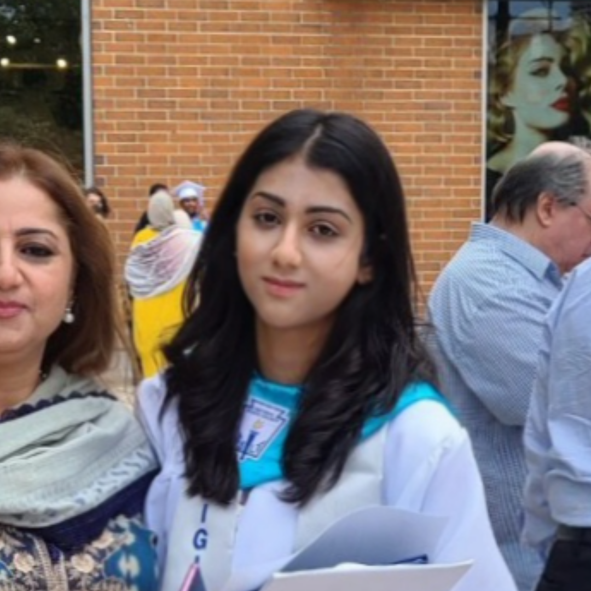

Abiha Hussain

I was born in Chicago, but my parents are both from Pakistan. I grew up on West Ridge, which is on the northside of Chicago, right next to Rogers Park. I actually ended up working at the Swedish hospital where I was born, next to the same doctor who helped deliver me. I have two older brothers; one of them actually works in the IT field, which was the reasoning for my choosing my major.
I went to elementary school at Dewitt-Clinton Elementary School. It was a really great school for after-school activities and focused a lot on math. After that, I went to Mather High School, which is less than a mile away from my old elementary school. I played tennis in high school and participated in their art club. A fun fact about Mather that everyone who went there knows is that one of the cofounders of PayPal went there. Now, I am in my second year at IIT with a major in information technology and management.
Hobbies
Ever since I took a class in high school about photography, I have enjoyed spending time taking photos. I currently have a Canon Rebel T7 camera that I use to take photos. Here are some of the photos I took in high school: